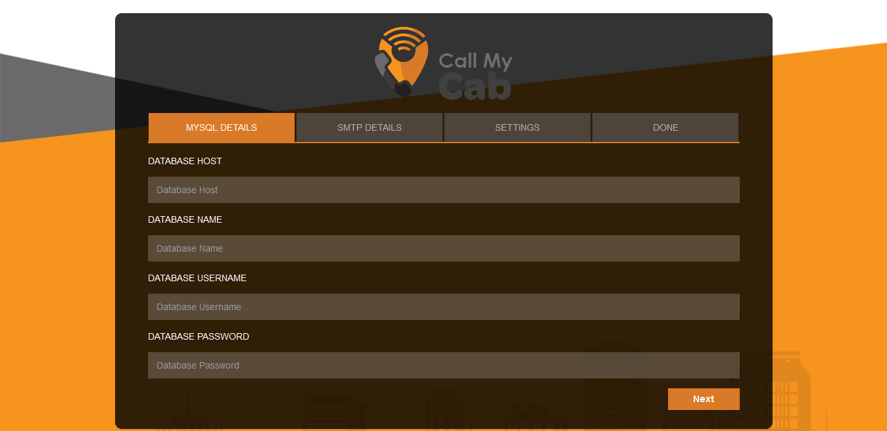
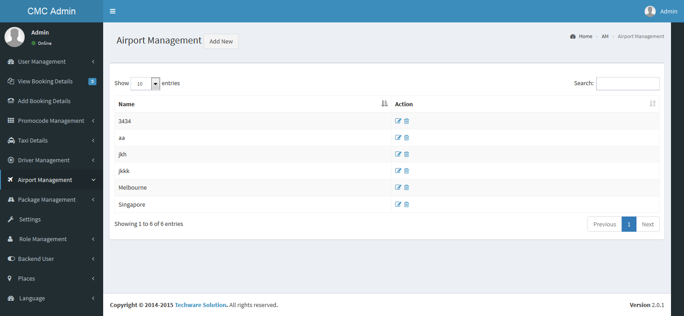
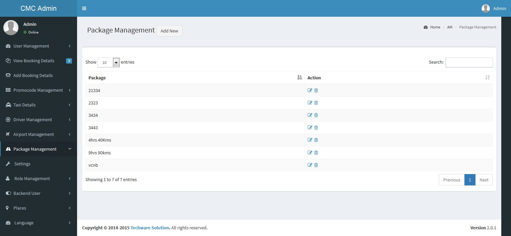
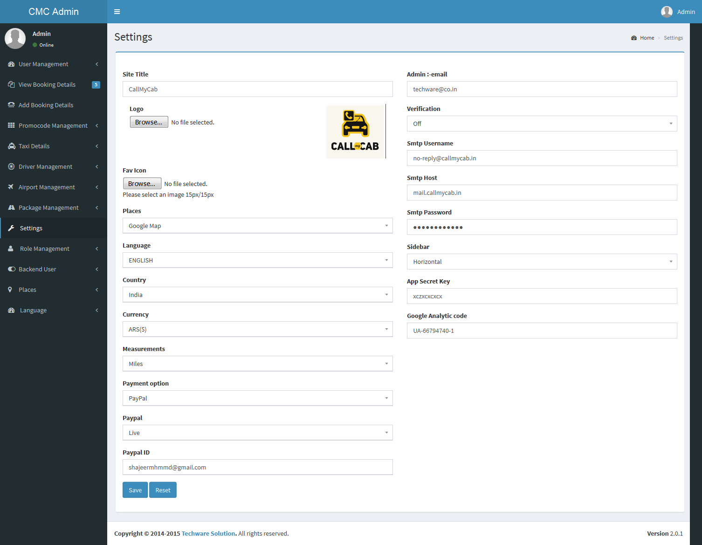
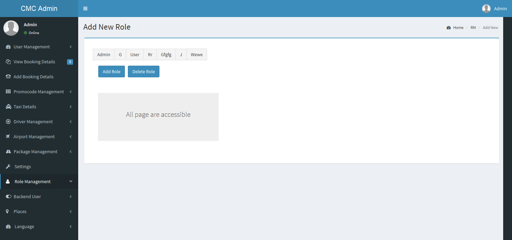
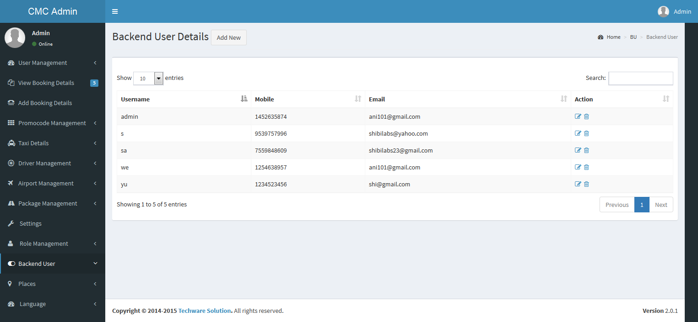
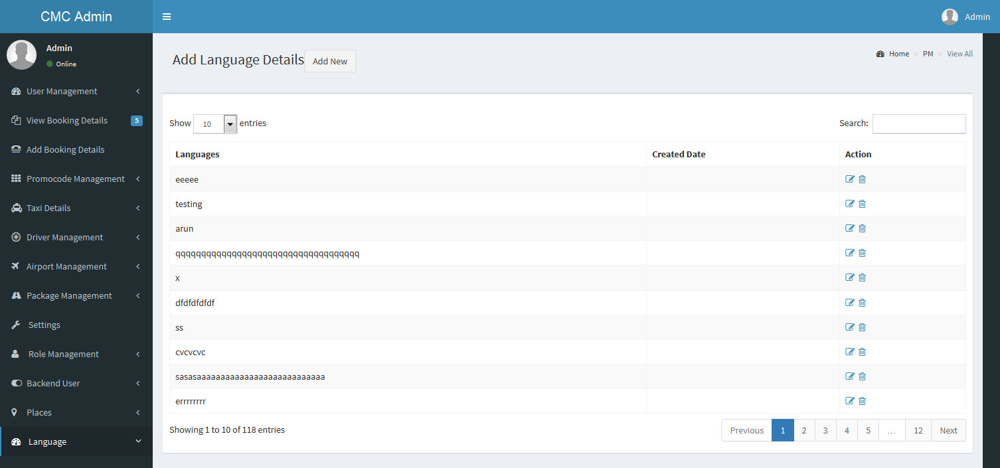
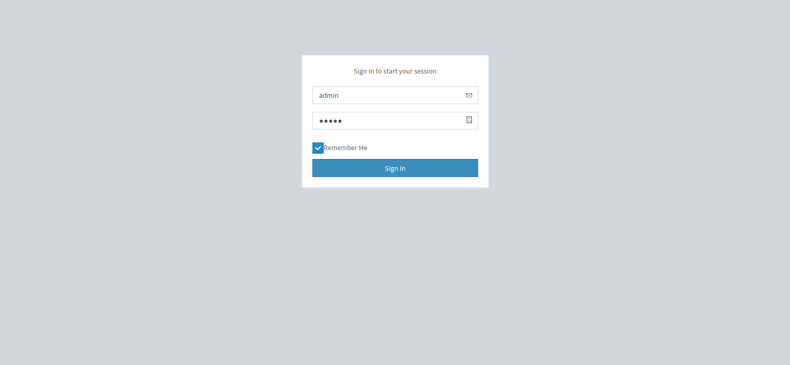

Created: 19/11/2015
By: Techware Solutions
Email: info@techware.co.in
Thank you for purchasing our website. If you have any questions that are beyond the scope of this help file, please feel free to email via my user page contact form here. Thanks so much!
Call my cab is an awesome online software for taxi cab booking system. Built on PHP with Codeignator Framework. Its customer friendly website built for fast, efficient, effective, responsive way to access all the cab facilities on your finger tips.
It has all the details, information of the cab, the cab driver and the owner of the cab so the customers feel secure in their travel and they can track the vehicle and driver easily with the help of the software.
The customers have their own way of access to the website as it's a responsive website which is readily and easily available and supported in every devices. One of the uniqueness of this type of service is that the customers can pay online instead of paying at travel.
Step 1: Upload the source folder via ftp or file manager.
Step 2:Create a database yourdbname.
Step 3:Using the link http://yoursitename.com/callmycab/installer run the installer
Step 4:Fill out your database details in the installer and save your changes.
Step 5: A form for filling out your site details, smtp details will appear, enter your details and save your changes.
Step 6:Now you will get your site url, admin url, admin password and username.
User management is for admin to view and manage the details of the registered users in the backend.
To view all the registered users in backend
To register new users via backend
Shows the booking details of the registered users, can assign driver and view the assigned drivers within the 4 modes of transport.
Can edit, manage and assign drivers for point to point bookings
Can view details of drivers for point to point bookings
Can edit, manage and assign drivers for point to point bookings
Can edit, manage and assign drivers for point to point bookings
Can edit, manage and assign drivers for hourly transfer bookings
Can edit, manage and assign drivers for hourly transfer bookings
Can edit, manage and assign drivers for outstation transfer bookings
Can edit, manage and assign drivers for outstation transfer bookings
Can add new bookings through admin panel.
If users have promocode then here is where those promocodes are verified, added, deleted and edited by the admin.
Easily update and edit the Taxi details for different modes of transport via the Admin panel.
Driver management is for admin to view, add and manage the details of the registered drivers in the backend.
Here the details of the selected airports are shown using a drop down box, the admin can view and edit all the airport details in backend
Different available rental package details can edited, updated and deleted in this module.
This is the main part of the website, everything added in the front end is edited and updated in this section. Here the site url, title, logo, tagline,currency, measurements, app secret key, smtp details, paypal details, admin email, places whether default or from google map and sms gateway can be edited.
Here the roles and permissions are set, the permissions to views and access pages are set in this section. Know who all have permission to do what in the backend, who has guest access and who all are Admin
Backend users are those who have access to edit and update the dashboard.
The places can be loaded by two methods whether from Google map or by default.
Language option is to set the language of the site.
Login using the following url with username and password admin, admin into the callmycab admin panel.
Username:admin
Password:admin
URL: http://yourdomain/admin/
